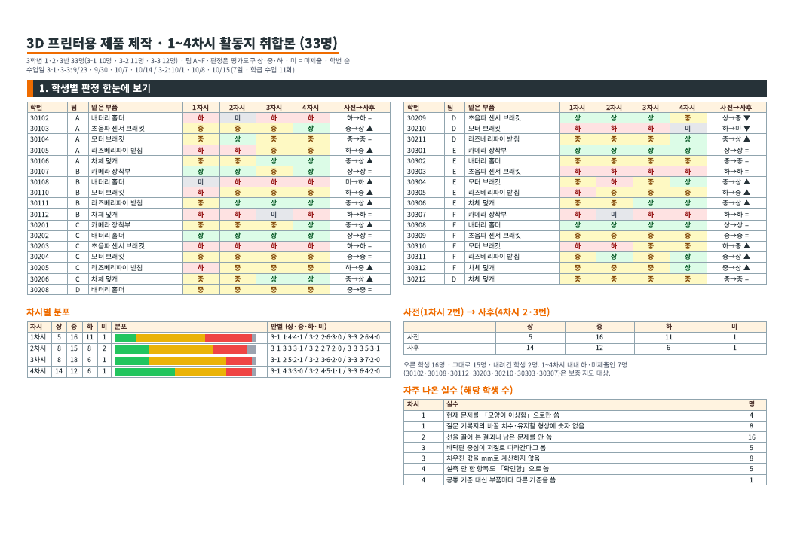

TEAM DRAWINGS
여섯 가지 케이스 설계
공통 장착 규격을 바탕으로 팀마다 다른 차체 실루엣을 설계했습니다. 도면을 선택하면 원본 PDF가 열립니다.
STUDENT RECORDS
학생별 산출물 기록
차시별 판정은 활동지 취합본의 상·중·하·미 기준을 그대로 사용했습니다.
SOURCE ARCHIVE
수업 근거자료
학생별 판정, 교사 메모, 차시별 분포와 자주 나온 실수는 활동지 취합본에서 확인할 수 있습니다. 추가목록은 후속 산출물을 기록하기 위한 원본 양식입니다.

9쪽 PDF 열기